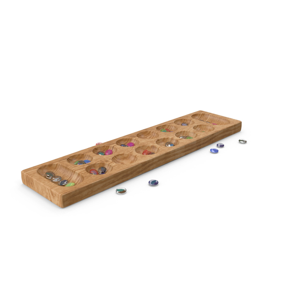

O jogo começa com 48 sementes distribuídas igualmente pelas casas. Em cada jogada, o jogador escolhe uma casa da sua fila, pega todas as sementes dela e as distribui pelas casas seguintes, incluindo o seu próprio poço, mas não o do adversário. O jogo tem regras simples, mas envolve estratégia e raciocínio, pois o jogador pode capturar as sementes do adversário ou jogar novamente se terminar no seu poço. Você pode jogar contra o computador em dois níveis de dificuldade: Normal e Avançado, que usam diferentes estratégias para espalhar e capturar sementes. Este projeto foi criado em Python com o modelo MVC (Model-View-Controller), que separa a lógica do jogo da interface gráfica
Ver codigo